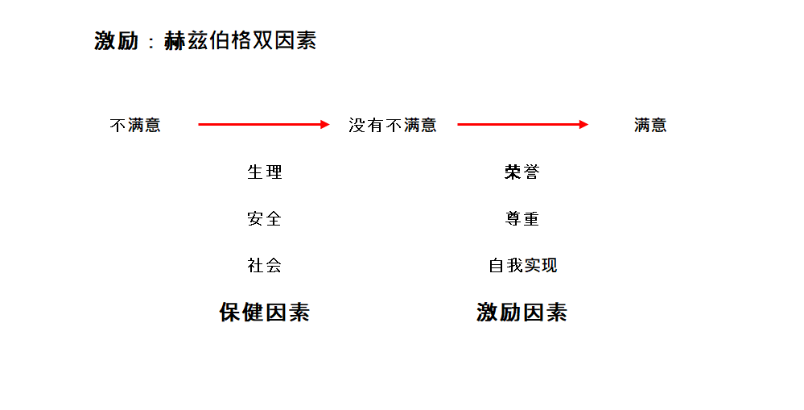

激励与自我激励
马斯洛需求层次理论
{kind=link}
有研究认为每个人工作的积极性主要靠个人的内驱力，这种内驱力是需要我们去激发出来的。那怎么激发员工的内驱力呢？人的内驱力是来自于很多复杂的方面，包括价值观、性格、需求。 价值观和性格是相当稳定的东西，而需求是个变化着的东西，是受激励因素影响最直接的方面。 每个人都在当前时刻都有一定的需要，这个需要决定了内驱力的想法。当我们去激励一个人的时候，首先要发掘他当前的需要，想办法满足他的要求，当他的需要得到满足之后，他就会更努力的工作。
马斯洛通过研究发现人的需求是分5个层次的：生理需求、安全保障、社会交往、荣誉自尊、自我实现。 通过分析某个人的需求层次，可以更直接的满足人的需求。
生理需求
通俗来讲就是指衣食住行， 这个是人最基本的需求， 每天必须能吃的上饭， 而且有地方居住。所以，在公司里边，我i们往往会给实习生提供住宿和餐补， 因为实习生工作比较低， 而且扣税比率高， 为了让他们安心工作，公司就要考虑满足他们的住宿问题。
同理，在疫情期间，上海人民都处于生理需求比较重要的阶段，只要谁有渠道满足居民的吃饭问题， 人们很开心，心里就很满意。
安全保障
生理需求得到满足以后，人还有对安全感的需要，比如需要有稳定的工作、稳定的住房（最好是自己的房子）、稳定的医疗保障，能够看得起病。能有养老保险，老了也能有生活保障。 职场人能有盼头，有固定的涨薪的预期。 这些都是人们对于稳定状态的需要。
社会交往
人活着主要还是为了开心。在公司里能有比较稳定和谐的同事关系，能够得到公司的尊重，能够与客户平等相处。在个人的生活中，有一定的社会交往网络，有稳定的家庭关系。这些都是人对社会交往属性的需要。
荣誉自尊
如果一个人前三层的需要都能够得到满足，他就会有更高要求，他会希望获得荣誉、能够出人头地。希望获得更好的平台发展，有更好的晋升机会。在自己的朋友圈中，不单是一份子，还是朋友圈中举足轻重的人物。 当人的需要达到荣誉自尊层级，他就会更积极主动，内驱力也更充足。
自我实现
人达到自我实现层级的需要，就已经脱离的物质需要。这个层级的人要做的就是遵从自己的内心的呼唤，做点自己想做的事情。他不需要通过能挣多少钱来证明自己，相反，他会看重自己能为他人提供什么帮助。能为社会带来什么价值，能创造什么价值。 例如、任正非，他坐车从来不搞特权，穿着也很朴素。他考虑的事情是如何创造一个伟大的公司，能够用科技让人们过的越来越好。
举例： 西天取经组合中，猪八戒处于第一层需要，他好吃又好色，且看唐三藏是如何满足他的呢？ 首先，有好吃的会想着让给他吃。 其次，把轻省的工作交给他做，打女妖精让他上。
沙悟净是处于第二层，他很害怕取经这个组织散伙，这样他就无处可去了。 看看他的经典台词：
Tip
二师兄不好了，师傅被妖怪捉走了
大师兄不好了，师傅和二师兄都被妖怪捉走了
师傅，你就不要骂大师兄了， 大师兄也不是故意的。
大师兄你就少说两句吧。
二师兄，你不要急着分行李，我们还有机会
对于这种人，唐僧该如何激励他？
- 你只要好好干，这个团队始终有你一份子。
- 对他施展不抛弃、不放弃。
这样，他就会任劳任怨，什么苦活累活他都会干。
孙悟空就属于自我实现层次的人。 他有除恶务尽的性格，大妖精这件事情，不需要师傅命令他，他自己就主动去做，而且见到妖精就打死，不管师傅让不让他去打，他都打死，不让妖精祸害人间。 对于孙悟空，唐三藏怎么激励，唐僧应该对他说，打妖精我不如你，你可以放手去打，有黑锅我来帮你背。
双因素理论
研究发现，仅仅满足人们的物资需要，并不能让员工对公司满意。当年给一个员工加工资，刚开始他还会很高兴，但是世界一长，他就会感觉是因为自己能力强，这是自己应该得到的。
赫兹伯格的双因素理论解释了为什么会有这种现象。他发现人们的态度在不满意到满意之间还有个中间状态，即没有不满意。 当通过物质激励满足了人的生理、安全和社交需要以后，（在双因素理论中，这三个层次有称为保健因素）。只能让人从不满意到没有不满意。接下来，如果要消灭不满意，让人满意，就需要注重激励因素，即通过荣誉，尊重和自我实现来激励员工，让员工达到满意的状态。
赫兹伯格双因素理论如下: 
{kind=link}
总结
要产生持续的激励效果， 需要多考虑保健因素， 多用认可，鼓励、赞美的方式来激励员工。幸福快乐的公式：满意度 = 交付 - 期望 ，降低期望，知足常乐。